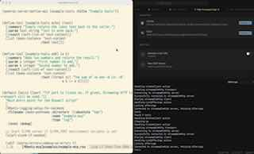
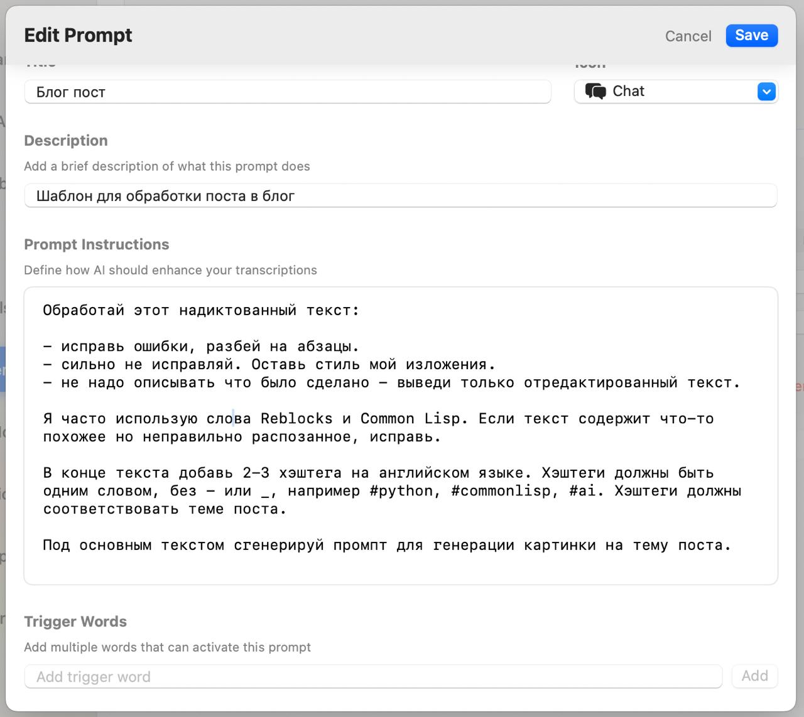
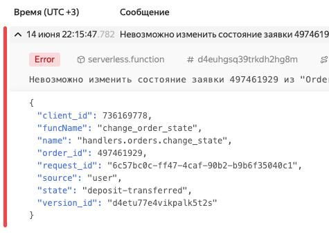
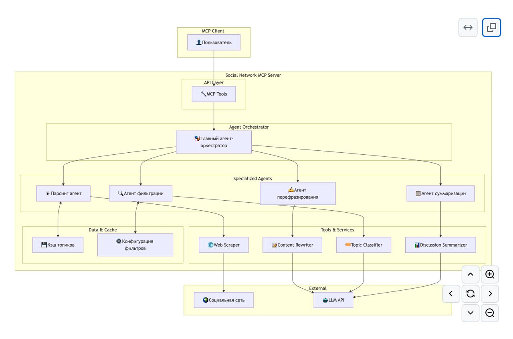
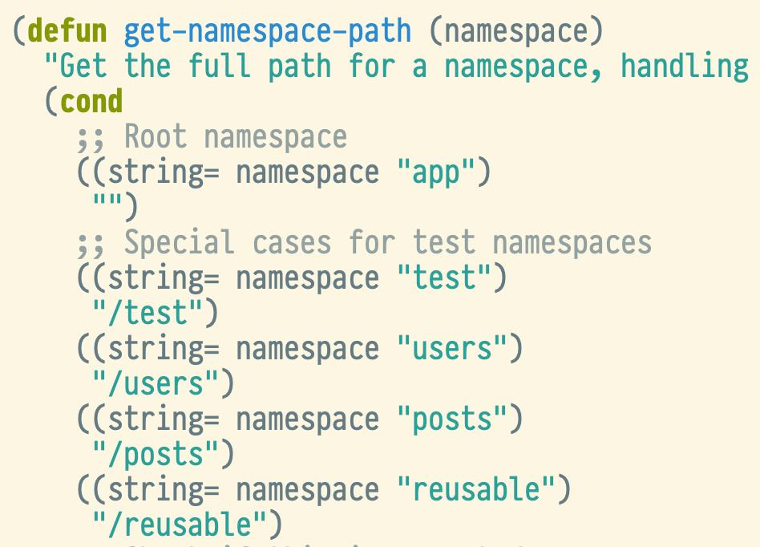

Страница 5
Как продвигаются дела с MCP фреймфорком для Common Lisp
posted on 2025-06-29

Привет, друзья! Сегодня хочу дать небольшой апдейт по тому, как продвигаются дела с MCP-фреймворком для того, чтобы можно было писать MCP-сервера на Common Lisp.
VoiceInk - opensource альтернатива для SuperWhisper
posted on 2025-06-16

Некоторое время назад я посетил семинар, посвященный вайб-кодингу. Там коллега в лайв-режиме показывал, как он создает код с помощью нейросети, используя голосовой ввод. Я очень удивился, потому что стандартный голосовой ввод на маке часто путает слова. Когда ты диктуешь ему по-русски, он часто неправильно воспринимает текст, если в нем используются английские термины, например, названия функций. Голосовой ввод на маках все это путает и выводит в лучшем случае что-то неразборчивое или далекое от того, что ты просил.
Почему я ломаю обратную совместимость
posted on 2025-06-15
Сначала хотел сделать пост про то, почему я редко сохраняю обратную совместимость в своих open-source библиотеках. Вот недавно как раз сделал обновление библиотеки Reblocks, в которой поломал обратную совместимость, причем довольно серьезно.
Про структурное логгирование в Python и Yandex Cloud Function
posted on 2025-06-14

Сегодня я продолжал возиться со своим pet-project, который одной ногой работает в SaleBot, а второй - использует Yandex Cloud Functions и YDB для того, чтобы запускать более сложную бизнес-логику.
Как прошёл AI Code Jam в Яндексе
posted on 2025-06-04

Вчера у нас был внутренний яндексовый хакатон. Мы изучали, как работают агентские системы. Задания можно было выбрать любые, мы в нашей команде решили написать агентскую систему для работы с социальной сетью.
Обещанного три года ждут
posted on 2025-05-25
Обещанного три года ждут. Или нет?
Ещё в марте говорил, что буду держать вас в курсе того, как проходит моё обучение в университете Zerocoder. Но в последнее время ничего не писал. На самом деле был очень занят — дорабатывал свои библиотеки, связанные с Reblocks.
Нейронка пишет код, как стажёр
posted on 2025-04-09

Нейронка пишет код, как стажёр. Ленивый стажёр.
Помните, недавно я написал радостный пост про то, как с помощью нейросети сделал за час новую библиотеку для роутинга урлов, почти как в Django? Затем я потратил ещё пару часов на эксперименты с рефакторингом кода и дополнением тест-кейсов - тоже с помощью нейросети Claude 3.7 конечно. Только в этот раз использовал не Roo Code, в Aider и плагин для подключения его к Emacs.
Нейронка уже пишет на Common Lisp лучше стажера
posted on 2025-04-05
Сейчас за час, не написав ни строчки кода сделал такую библиотеку:
https://github.com/40ants/routes/pull/1/files
там и тесты есть с документацией.
Несколько слов о Zettelkasten и том как я веду заметки
posted on 2025-03-24
Сегодня один из коллег во внутренней соцсети упомянул зеттелькастен и описал то свой способ ведения заметок в Sublime Text. У него довольно системный подход к тому, как заметки должны быть структурированы.
Чем может быть полезен Yandex Workflow?
posted on 2025-03-18
Как рассказывал недавно, в последнее время смотрю разные вебинары от университета Зерокодер. И вот в одном из них показывали как бот работает в связке нескольких конструкторов:
- Puzzlebot – в нем задавались разные команды бота
- При определенной команде управление передавалось в Make.com, где был описан workflow по которому вызывался OpenAI с определенными промптами и бот таким образом обрабатывал произвольный текст от пользователя, отвечая текстом, сгенерированным с помощью ИИ.
Created with passion by 40Ants